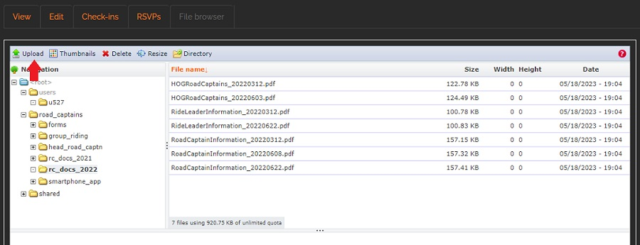
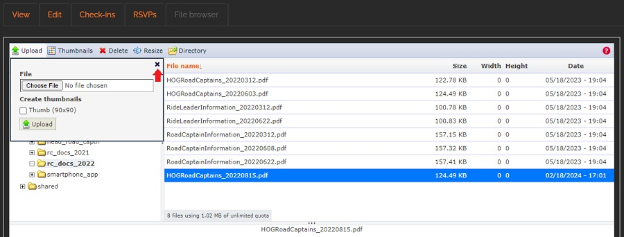

Upload Road Captain Documents
General notes, terminology and policies
- There are two environments in which you can work;
- The sandbox environment is where you can test and try things out to familiarize yourself with the steps you will be going through. The sandbox environment starts with dev. Our sandbox environment is https://dev.raleighhog.com
- The production environment is the site that all members see. This is where you make the changes that chapter members see. Our production environment is https://www.raleighhog.com
- Please note that prior to doing anything in the production environment you can test in the sandbox environment first. This environment is used for testing and is not seen by members.
- Your login credentials are the same for both environments
- Your webmaster will also help with any questions you may have.
- Please use caution when in the directories. You have the ability to delete files. This should never be done.
- Files being uploaded should include a datestamp. This is how we distinguish the latest file to be used.
- For instance,
titleOfYourFile_YYYYMMDD.pdf where YYYY is the four digit year, MM is the two digit month and DD is the two digit day. This is a good filename as it allows the files to easily be ordered by name and date.
- Note that there is a directory under
root --> users. The directory name starts with a 'u'. This is a directory that only you can see. You can upload files here but they cannot be shared with others. This directory will not be addressed in this document. Additional information about it can be found by talking with your local webmaster.
- By default, this is the directory selected when you first log in. Be sure and follow the instructions below to upload into the correct, working directory.
Upload a Document
- Login to your account on raleighhog.com
- Click on the 'My account' link in the navbar. see image below

- On your account page, click the 'File browser' tab. see image below

- The following window opens. This shows all the directories the Road Captains have access to. Road Captains will only use the 'road_captains' directory for this tutorial.

- Click the 'road_captains' directory highlighted in the above image to expand it and it will expand as follows. As years go by there will be directories added. For this tutorial we will be using 2022.

- Click on the current calender year to expand the directory. You will see a list of files that have been uploaded. For this tutorial we will use 2022. The expanded directory will look similar to the image below.

- To upload a new file into the directory click 'Upload' in the toolbar. see image below 
- In the pop-up that opens click 'Choose File', then select the file on your local machine that you wish to upload. see image below

- Click the 'Upload' button in the pop-up to load the file onto the server. see image below

- You will see the file you just uploaded in the list of files. If you need to upload another file continue by repeating the steps from step #8.
- When you are done uploading your file(s), click the 'x' in the pop-up window to close it. see image below 
- Logout when you have finished.
- Our website has pointers to files in this directory. If you've uploaded a new Road Captain list, then let the webmaster know so that the pointer can be updated to point to this latest file.